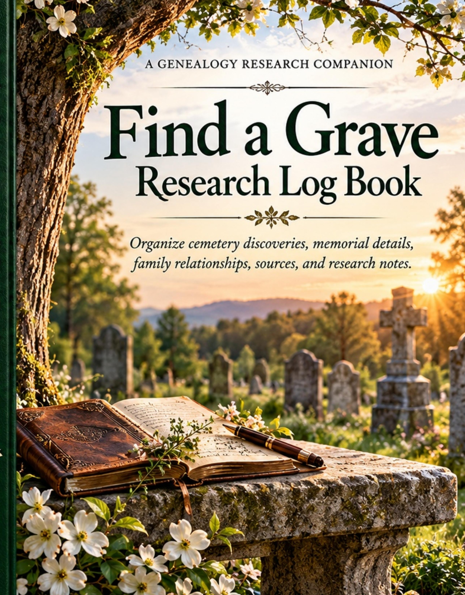

Find a Grave Research Log Book
Keep cemetery discoveries, memorial details, family relationships, sources and research notes organized in one place.
A practical genealogy and cemetery research companion designed to give each person a structured research record and dedicated notes space for tracking important information, follow-up tasks and new discoveries.

- Open Theory CovePublisher
- GenealogyResearch logbook
- 157 pagesPaperback
- 75 recordsTwo-page spreads
Keep your genealogy research together
Cemetery and memorial research can quickly produce names, dates, inscriptions, family connections, source links and handwritten notes scattered across different places. This logbook gives that research a consistent home so you can record what you find and know where to continue next time.
Each person receives a two-page spread with a structured research record and a full notes page, giving you room to document discoveries without losing the context that connects them.
Designed for practical cemetery research
Memorial & cemetery details
Record cemetery, burial, plot and memorial information as you research.
Family connections
Keep parents, spouses, children and other family relationships connected to each research record.
Inscriptions & obituaries
Capture headstone inscriptions, obituary details and other clues that may support your family history.
Sources & citations
Track source information, links and research dates so you can return to important evidence.
Notes & transcription
Use the dedicated notes space for transcriptions, questions, observations and discoveries.
Follow-up research
Keep next steps and additional sources to check with the person or family you are researching.
Every name has a story
A research index and follow-up source tracker help you see what you have already documented and what still needs investigation. The goal is simple: fewer loose notes and a clearer record of the people, places and evidence you uncover.
From Open Theory Cove
Research books made to help preserve the details behind every family story.